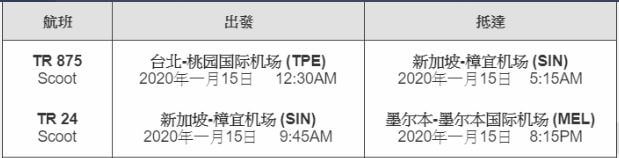

-
ID: SunnyGirl
暱稱: 想當老奶奶的少女
-
Day1
-
第一天班機
 -
搭乘Skybus至墨爾本市區：Skybus購票
從墨爾本機場（Tullamarine Airport）到市區的主要交通方式為SkyBus機場巴士，機場巴士到墨爾本市區只有南十字車站這個上下車地點，欲轉乘免費飯店接駁服務（Free Hotel Transfer Service）去住宿地點也是從南十字車站搭車喔！另外，因為是通往機場的交通樞紐，因此南十字車站也有提供行李寄物服務的置物櫃，而且數量非～常～充足。
-
住宿 Ibis Melbourne Hotel and Apartments：Ibis Melbourne Hotel and Apartments官網
-
-
Day2
-
維多利亞市場（Queen Victoria Market）

維多利亞市場販售了各式澳洲紀念品、平價服飾、衣服等菜市場系列商品，當地人稱作「Vic Market」或「Queen Vic」，也是當地人購買各種新鮮蔬果、農產品、果醬、海鮮、肉類與乳製品的好去處。
-
弗林德斯街車站（Flinders Street railway station）

墨爾本市中心的弗林德斯車站是澳洲最古老的車站，同時也是墨爾本最大的車站、墨爾本的地標。弗林德斯車站的文藝復興風格外型為模仿聖保羅大教堂建造而成，圓頂屋頂和石材外觀，使之散發古典美感。佛林德斯是墨爾本的交通樞紐，因為火車支線基本上都會以這站作為起訖點，使之成為每天流量超過二十萬人的大型車站。
-
維多利亞州立圖書館 State Library of Victoria
維多利亞州立圖書館是個超過一百五十年歷史的公共圖書館，館藏豐富之餘，會被列為墨爾本必去景點的原因是它的「八角閱覽室」。八角閱覽室是州立圖書館眾多個閱覽空間之中的代表，座位以放射狀排列填滿八角空間，而頭上是無限挑高的設計並直達最上方的玻璃圓頂，為這寧靜空間灑下和煦陽光。雖然在照片中就已經感受到八角閱覽室的美，但親臨現場真的更是停不下按快門的手，最有趣的是，親眼看到藏在這幾張自習桌之中的「棋桌」（有象棋跟西洋棋！），實在是太可愛。
-
-
Day3
-
墨爾本大洋路 Great Ocean Road 一日遊
大洋路一日之旅，沿著澳洲最壯麗的海岸線，收藏此生必去的美景！欣賞十二門徒岩、洛克阿德峽谷等許多旅人嚮往的著名景點，沿途看看維多利亞州的可愛小鎮及海濱漁港。這趟不思議的旅程將從墨爾本市區出發，帶你穿梭於大洋路奇石美景之中，參與大自然最精彩的饗宴。
-
-
Day4
-
疏芬山淘金鎮（Sovereign Hill）

1850年代時，在澳洲的巴拉瑞特區域發現大量黃金，吸引了大批淘金客來這邊一圓黃金夢。疏芬山就是當年淘金熱的熱門地點之一，現在成為該地區有名的淘金主題園區，重現當年淘金盛況以及讓遊客體驗、認識淘金歷史。在疏芬山淘金鎮，除了熱鬧有趣的園區之外，也有黃金博物館可以參觀。
-